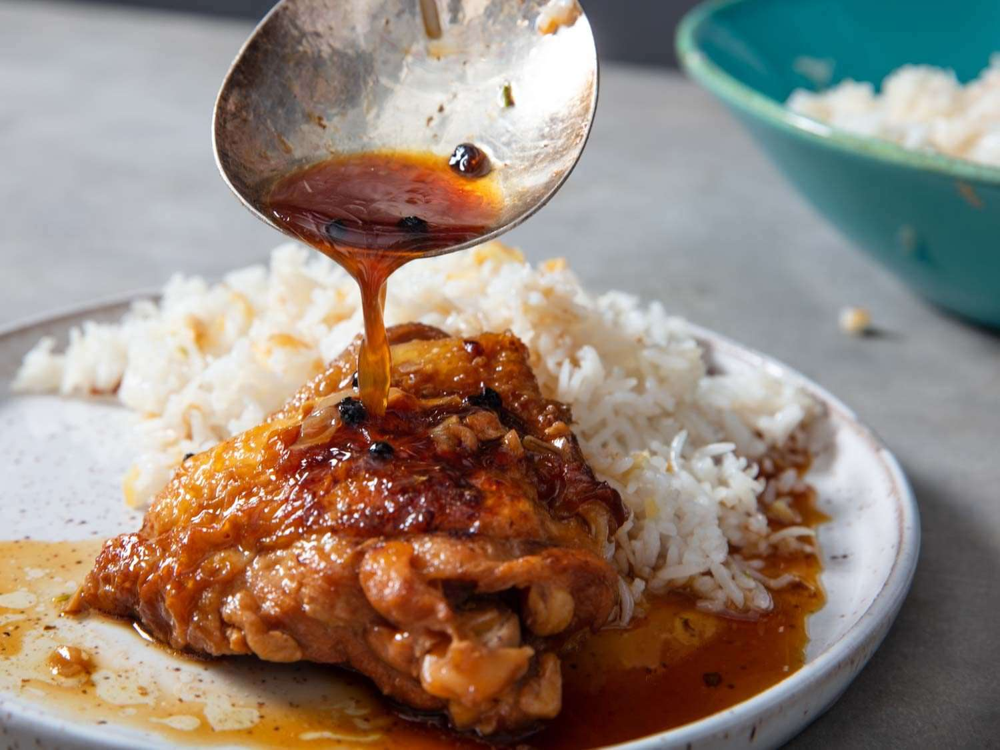

Classic Adobo

What is Classic Adobo?
Adobo is one of the most famous dishes of the Phillippines. Although each region may have a slight variation to it, the foundation of this dish remains the same. The mixture of soy sauce and vinegar adds a salty/sour element that pairs nicely with freshly cooked white rice. The addition of black pepper adds a kick of spice. Copious amounts of garlic are included to round out the flavor. This dish is easy to make and the long marinade time ensures all flavors are infused into the chicken.
Note: This recipe is from I Am A Filipino by Nicole Ponseca and Miguel Trinidad
Ingredients
1 cup white sugarcane vinegar
1 cup soy sauce
10 garlic cloves, minced
2 teaspoons whole black peppercorns
2 tablespoons fruit preserves, jam or jelly, such as blueberry or fig
3 bay leaves
2 bone-in, skin-on chicken thighs
2 bone-in, skin-on chicken legs
1 pound fresh pork belly, cut into 1-inch cubes
2 tablespoons vegetable oil
4 to 6 cups cooked white rice, for serving
Cucumber-Tomato Relish (optional)
- In a large ziplock bag or nonreactive container, stir together the vinegar, soy sauce, garlic, peppercorns, fruit preserves, and bay leaves until the preserves are throughly combined. Add the chicken and pork belly, seal the bag or container, and marinate in the refrigerator for at least 6 hours, or preferably overnight.
- Transfer the chicken and marinade to a large Dutch oven or heavy-bottomed pot with 4 cups water and bring the liquid to a boil over high heat. Immediately reduce the heat to medium and simmer for 30 minutes, or until the chicken is cooked through. Turn off the heat and transfer the meat to a bowl.
- In a Dutch oven or heavy-bottomed deep-sided pot, heat the vegetable oil over medium heat. Remove the pork belly pieces from the cooking liquid (do not discard the liquid) and add them to the pot. (Be careful, as the oil may spatter.) Cook, stirring frequently, until the pork belly is brown on all sides and crispy, about 7 minutes.
- Add the chicken pieces to the pan and cook, flipping them occasionally, until they are browned, about 5 minutes.
- Add 1/2 cup of the cooking liquid to the pan and cook until all the liquid has evaporated and the only thing left in the bottom of the pan is the fat from the chicken and pork, about 10 minutes.
- Serve hot with plenty of white rice and relish. If using, make sure to pour a little bit of fat from the bottom of the pan over each serving of rice.
Back to Homepage